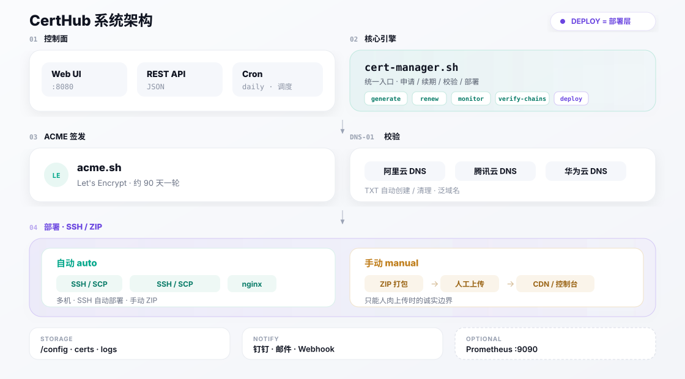
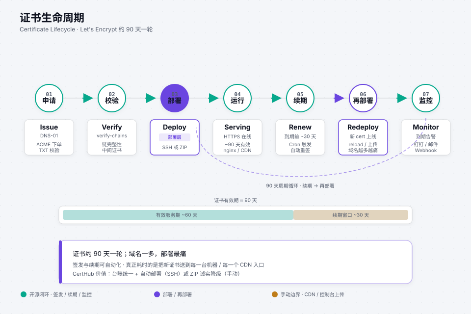

CertHub
CertHubArchitecture系统架构
Where the pain is, and how the loop closes.痛点在哪，闭环怎么收口。
issue ≠ deploy · ~90 days · multi-target

图 1 · 系统架构 — 控制面 → 引擎 → ACME/DNS-01 → 部署 → 存储 / 告警
Product pain (why CertHub exists)产品痛点（为什么做 CertHub）
- Certificates rotate about every 90 days. Miss one renew and HTTPS dies.证书大概每 90 天一轮。漏续一次，HTTPS 就挂。
- Many domains mean calendars, SSH boxes, CDN consoles, and cloud panels all diverge.域名一多，日历、机器、CDN 控制台、云平台面板各管各的，极易漏。
- Issuing is not the hard part. After ACME succeeds you still must deploy — some targets allow automation, some only accept a human upload.申请不是最难的。ACME 成功后还要部署——有的目标能自动推，有的只能人肉上传。
CertHub Pro商业版
Community is MIT-licensed, with official testing and support covering five certificates; it includes SSH deployment and manual ZIP without a built-in count lock. CertHub Pro licenses 10, 50 or 200 certificate slots and adds private production delivery features — Pro.
Community 采用 MIT 许可证，官方测试与支持覆盖 5 张证书，并提供 SSH 部署与手动 ZIP，不内置数量锁。CertHub Pro 授权 10、50 或 200 个证书槽位，并增加私有生产交付能力——见商业版。
Building blocks模块说明
- acme-manager —
cert-manager.sh: generate, renew, monitor, verify-chains, backup, deploy.acme-manager —cert-manager.sh：申请、续期、监控、校验证书链、备份、部署。 - DNS-01 — Aliyun / Tencent / Huawei for wildcards.DNS-01 — 阿里 / 腾讯 / 华为，支撑泛域名。
- Deploy — auto SSH/SCP + nginx reload; manual ZIP for consoles that only accept uploads.部署 — 自动 SSH/SCP + nginx reload；只能控制台上传的走手动 ZIP。
- acme-web · Pro — official dashboard + full REST on
:8080; Community keeps only/health.acme-web · Pro —:8080官方控制台与完整 REST；Community 仅保留/health。 - Truth on disk —
/configYAML,/data/certs|logs|backups.磁盘真源 —/configYAML，/data/certs|logs|backups。
90-day lifecycle约 90 天一轮生命周期

图 2 · 生命周期 — 申请 → 校验链 → 部署 → 运行 → 续期 → 再部署 → 监控
Deploy modes两种部署方式

图 3 · 部署模式 — 自动（绿）与手动 ZIP（琥珀）；SSH 自动 + 手动 ZIP
| Mode方式 | deploy_method |
Typical targets典型目标 |
|---|---|---|
| Auto自动 | auto |
SSH servers · nginx paths · SCP reloadSSH 服务器 · nginx 路径 · SCP reload |
| Manual手动 | manual |
CDN / consoles that only take a human upload — ZIP via CLI; Pro also offers Web/API只能人肉上传的 CDN/控制台 — Community 用 CLI 打 ZIP；Pro 另提供 Web/API |
Compose servicesCompose 服务
acme-manager # 证书引擎 + cron acme-web # Pro · :8080 控制台 + 完整 REST acme-monitor # 可选 Prometheus :9090